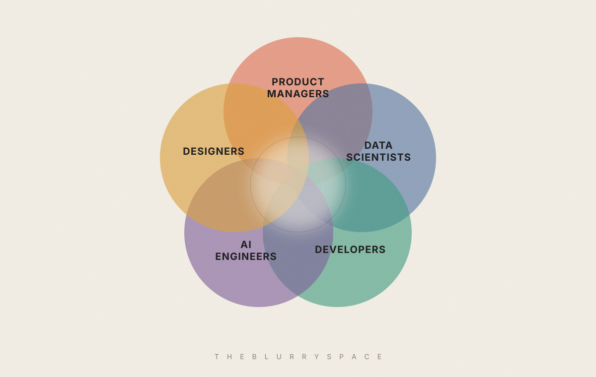
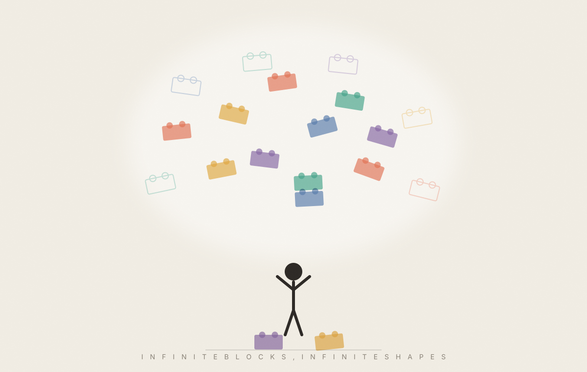

On AI, Product & the In-Between
The Blurry Space
2 June 2026

For more than a decade I lived in the blurry space between data scientist, developer, and product manager. A delicate place to stand. You never quite belonged to any one camp, and you frequently found yourself justifying why you were straddling the lines.
But now, because of AI, that blurry space has quietly become a place where anyone can stand.
🤨 AI Skeptic
I started working in AI in 2013, during my PhD. Back then, it wasn’t a hot topic. There was no hype, no headlines, just math, raw data, and a massive exercise in patience.
The work was deeply based in classical statistics. We would take a dataset and attempt to model its behavior using the traditional toolkit: regressions, random forests, support vector machines, and early neural networks. It was intellectually fascinating, but we were constantly limited by training data quality, limited compute capacity, and the black box of model explainability.
So I stayed a skeptic. Firmly in the symbolic AI camp. My belief was simple: you can't brute-force your way to intelligence. Pile up a neural network, feed it the internet, and all you get is a confident mimic. A system reproducing patterns it has already seen. Never understanding. Just predicting the next token. A “stochastic parrot.”
💥 When everything shifted
Then generative AI happened. And it was hard to look away.
It started with a 2017 paper, “Attention Is All You Need,” which gave us the Transformer, the architecture behind almost every model today, including BERT and GPT. The world only noticed when ChatGPT arrived in 2022. A simple chat box, and within months the fastest-growing app ever.
The rest came fast:
- Scale: RLHF (Reinforcement Learning from Human Feedback) taught models to align with human intent, while Mixture-of-Experts (MoE) architectures optimized compute so models only woke up the components they actually needed.
- Multimodality: Systems evolved to seamlessly process text, audio, images, and video inside a single context window.
- Agentic: We moved from basic prompting to reasoning models that explicitly “think” before answering, and agentic workflows where models independently use tools to execute multi-step tasks.
Frameworks like LangChain and Anthropic's Model Context Protocol turned models into something you could actually build with.
I'm still not sure it's “intelligence” in the way I once meant the word. I think it's a different kind. But the practical implications are real, and they are radically reshaping how we create.
🛠️ Building with AI: The Product Management Shift
For a product person, these tools collapse the whole build-measure-learn loop.
Claude Code for fixing bugs and fast prototyping. Cursor for moving fast inside the codebase. Lovable to turn a one-line idea into a working app, no engineering bottleneck. Figma Make and Claude Design for high-fidelity prototypes straight from a prompt. Pipelines that pull insights from surveys, drop summaries into Slack, write them up in Notion and draft PRD in Jira.
The Paradigm Shift: When the friction of building drops to near-zero, the role of the product manager changes fundamentally. You are no longer managing an execution pipeline or tracking delivery velocity; you are managing the clarity of your intent and the definition of quality.
At home, I connected Claude to my Obsidian vault to organize my notes and ideas, opening up a completely new dimension of personal learning. I feel like a kid sitting in front of a giant, infinite pile of Lego blocks. Infinite shapes, infinite possibilities and occasionally, a sense of being completely overwhelmed. Every single week brings a new model, a larger context window, a sharper agentic skill, or a new developer tool.

People fear AI will destroy jobs. I think the better move is to pick up the tools and build. New work, new capacity, new opportunities.
💸 The cost of all this
Because AI is never really free, even when it's free.
The world's knowledge is being compressed into a handful of giant models, owned by a handful of companies. They carry the bias of how and what they're trained on. The internet skews Western and English-speaking, and so do they.
Then there is the massive energy bills, the staggering growth of data centers, the infrastructure strain, and the hard realities of localized heat and resource consumption. And, of course, there are the darker applications: the rapid integration of these systems into surveillance, defense, and warfare.
🛤️ Open source and the other road
This is why open source matters to me. When DeepSeek released R1 under an MIT license, it proved frontier-level reasoning didn't have to live behind one company's API. We need small base models people can train from scratch, on their own data.
And I keep one eye on the other road. Symbolic AI.
Developments in “World Models” built on architectures like JEPA represent a necessary shift, teaching models how physical reality actually works, rather than just how text flows. I think that we need deeper collaboration between AI engineers, robotics and cognitive science to get past the “parrot” effect and build models that actually reason.
So I stay optimistic. I want this to be aimed at education and healthcare. At problems worth solving.
In the meantime, I am deeply enjoying this moment in tech history. The frontier between builders, developers, and product managers has gone entirely transparent. The PM can ship a functional prototype. The engineer can spend their cycles deeply thinking about user outcomes. The non-coder can build a self-contained product.
The traditional roles are blurring, and that organizational shift might actually be the real revolution. That ambiguous, blurry space I once had to justify has finally become a place where anyone can stand.